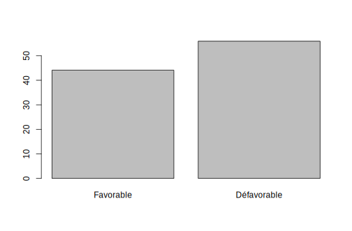

Partie 7 Analyse d’enquêtes (bases)
#> Loading required package: Matrix
#>
#> Attaching package: 'Matrix'
#> The following objects are masked from 'package:tidyr':
#>
#> expand, pack, unpack
#> Loading required package: survival
#>
#> Attaching package: 'survey'
#> The following object is masked _by_ '.GlobalEnv':
#>
#> cv
#> The following object is masked from 'package:graphics':
#>
#> dotchart- Mise en place : Télécharger le dossier exo7 et décompressez le sur votre ordinateur. Puis ouvrez le projet R dans Rstudio.
7.1 Introduction
On propose ici une démarche simplifiée de l’analyse d’enquête utilisant les fonctions R-base et quelques fonctions supplémentaires issues du package questionR qui permettent de simplifier l’écriture des programmes. Les explications détaillées se trouvent dans le très beau site web analyse-R auquel ont notamment contribué Julien Barnier et Joseph Larmarange.
https://larmarange.github.io/analyse-R/
ce programme suffit pour des analyses simples de questionnaires. Mais pour des analyses plus avancées, il faudra utiliser des packages plus avancés comme survey.
7.2 Données
7.2.2 Liste des variables
Les données sont issues de la Global attitude Survey réalisée par le Pew Research Center en 2019. On y trouve notamment les variables suivantes
| Variable | type | Description |
|---|---|---|
| pays | quali | pays de résidence de l’enquêté |
| sexe | quali | genre de l’enqueté |
| age | quali/quanti | Âge de l’enquêté en années révolues |
| opi_usa | quali | Opinion sur les USA |
7.2.3 Echantillonage
L’enquête a été réalisaée dans plusieurs pays du Monde sur des échantillons représentatifs (méthode des quotas), mais avec une variable de redressement pour compenser les biais d’échantillonage.
table(base$pays)
#>
#> ARG AUS BGR BRA CAN CZE DEU ESP FRA GBR GRC HUN IDN IND ISR ITA
#> 1033 985 1042 1043 964 1021 1976 1054 1008 995 1037 1028 1207 2475 967 1026
#> JPN KEN KOR LBN LTU MEX NGA NLD PHL POL RUS SVK SWE TUN TUR UKR
#> 1036 971 1001 993 968 1027 994 992 1035 1024 1038 1009 1012 1043 1046 1045
#> USA ZAF
#> 1473 14437.2.4 Choix des variables et du pays
On extrait un tableau ne comportant que les données utiles à notre analyse.
| poids | age | sexe | opi_usa | |
|---|---|---|---|---|
| 6089 | 2.0253670 | 20 | 1.Homme | 2.Plutôt favorable |
| 6090 | 0.6678256 | 35 | 1.Homme | 4.Très défavorable |
| 6091 | 0.2282839 | 68 | 1.Homme | 4.Très défavorable |
7.2.5 Transformation quanti-quali
Comment transformer la variable âge en variable qualitative ?

On peut choisir des seuils basés sur des normes. Par exemple considéré comme jeunes les moins de 30 ans et vieux les plus de 65 ans
don$age3a <- cut(don$age, c(0,30,65, 100))
levels(don$age3a)<-c("Jeunes","Adultes","Vieux")
kable(table(don$age3a))| Var1 | Freq |
|---|---|
| Jeunes | 185 |
| Adultes | 617 |
| Vieux | 206 |
On peut aussi utiliser des critères statistiques comme les quantiles permettant d’avoir des classes d’effectifs approximativement égaux :
mybreaks <- quantile(don$age, c(0,1/3,2/3,1))
don$age3b <- cut(don$age, breaks = mybreaks)
kable(table(don$age3b))| Var1 | Freq |
|---|---|
| (18,41] | 331 |
| (41,60] | 350 |
| (60,93] | 314 |
7.2.6 Recodage des modalités
Dans le cas d’une variable qualitative, on peut effectuer des recodages pour supprimer ou fusionner des niveaux. Considérons la variable opi_usa qui possède au départ 6 modalités
| Var1 | Freq |
|---|---|
| 1.Très favorable | 78 |
| 2.Plutôt favorable | 404 |
| 3.Plutôt défavorable | 368 |
| 4.Très défavorable | 135 |
| Ne sait pas | 20 |
| Refuse de répondre | 3 |
Suppression des non réponses en remplaçant leurs niveau de factor par NA
don$opi_usa_rep4 <- don$opi_usa
levels(don$opi_usa_rep4)<-c( "1.Très fav.", "2. Plutôt fav.",
"3. Plutôt défav.", "4.Très défav.",
NA, NA)
kable(table(don$opi_usa_rep4))| Var1 | Freq |
|---|---|
| 1.Très fav. | 78 |
| 2. Plutôt fav. | 404 |
| 3. Plutôt défav. | 368 |
| 4.Très défav. | 135 |
Fusions des non réponses pour étudier leur importance par rapport aux réponses
don$opi_usa_nr <- don$opi_usa
levels(don$opi_usa_nr)<-c( "Réponse", "Réponse",
"Réponse", "Réponse",
"Non réponse", "Non réponse")
kable(table(don$opi_usa_nr))| Var1 | Freq |
|---|---|
| Réponse | 985 |
| Non réponse | 23 |
Fusion en deux classes “Favorable” et “Défavorable”
don$opi_usa_rep2 <- don$opi_usa
levels(don$opi_usa_rep2)<-c( "Favorable", "Favorable",
"Défavorable", "Défavorable",
NA, NA)
kable(table(don$opi_usa_rep2))| Var1 | Freq |
|---|---|
| Favorable | 482 |
| Défavorable | 503 |
Mais on pourrait aussi recoder autrement en “Modéré” ou “Polarisé”
don$opi_usa_pol2 <- don$opi_usa
levels(don$opi_usa_pol2)<-c( "Polarisé", "Modéré",
"Modéré", "Polarisé",
NA, NA)
kable(table(don$opi_usa_pol2))| Var1 | Freq |
|---|---|
| Polarisé | 213 |
| Modéré | 772 |
7.3 Analyse univariée
7.3.1 Fréquence simple
En l’absence de pondération il suffit de calculer les fréquences avec l’instruction table()puis de les afficher en ajoutant le total avec addmargins()
| Var1 | Freq |
|---|---|
| 1.Très fav. | 78 |
| 2. Plutôt fav. | 404 |
| 3. Plutôt défav. | 368 |
| 4.Très défav. | 135 |
| Sum | 985 |
7.3.2 Pourcentage (R-base)
On peut ensuite facilement calculer les valeurs en pourcentage en utlisant la fonction prop.table() de R-base, en lui appliquant la fonction addmargins() et en multipliant le tout par 100 …
| Var1 | Freq |
|---|---|
| 1.Très fav. | 7.9 |
| 2. Plutôt fav. | 41.0 |
| 3. Plutôt défav. | 37.4 |
| 4.Très défav. | 13.7 |
| Sum | 100.0 |
La fonction freq()du package questionr permet d’obtenir directement le résultat :
| n | % | val% | |
|---|---|---|---|
| 1.Très fav. | 78 | 7.7 | 7.9 |
| 2. Plutôt fav. | 404 | 40.1 | 41.0 |
| 3. Plutôt défav. | 368 | 36.5 | 37.4 |
| 4.Très défav. | 135 | 13.4 | 13.7 |
| NA | 23 | 2.3 | NA |
| Total | 1008 | 100.0 | 100.0 |
On peut également utiliser la fonction tbl_summary() du package gtsummary
| Characteristic | N = 1,0081 |
|---|---|
| opi_usa_rep4 | |
| 1.Très fav. | 78 (7.9%) |
| 2. Plutôt fav. | 404 (41%) |
| 3. Plutôt défav. | 368 (37%) |
| 4.Très défav. | 135 (14%) |
| Unknown | 23 |
| 1 n (%) | |
7.3.3 Marge d’erreur d’un pourcentage
L’inconvénient des tableaux précédents est qu’il ne permettent pas de voir la marge d’erreur des pourcentages en fonction de l’effectif. Considérez le cas suivant :
| n | % | val% | |
|---|---|---|---|
| Favorable | 482 | 47.8 | 48.9 |
| Défavorable | 503 | 49.9 | 51.1 |
| NA | 23 | 2.3 | NA |
Peut-on conclure qu’il existe une majorité défavorable aux USA ?
On peut utiliser la fonction prop.test()
mytab2 <- table(don$opi_usa_rep2)
prop.test(mytab2)
#>
#> 1-sample proportions test with continuity correction
#>
#> data: mytab2, null probability 0.5
#> X-squared = 0.40609, df = 1, p-value = 0.524
#> alternative hypothesis: true p is not equal to 0.5
#> 95 percent confidence interval:
#> 0.4577195 0.5210449
#> sample estimates:
#> p
#> 0.4893401- Conclusion : H0 il n’y a pas de majorité est acceptée (p < 0.524)
| Characteristic | N = 1,0081 | 95% CI2 |
|---|---|---|
| opi_usa_rep2 | ||
| Favorable | 482 (49%) | 46%, 52% |
| Défavorable | 503 (51%) | 48%, 54% |
| Unknown | 23 | |
| 1 n (%) | ||
| 2 CI = Confidence Interval | ||
- Conclusion : pas de majorité défavorable [48,54] ou favorable [46 ; 52]
7.4 Tableau de contingence
7.4.1 Tableau de contingence
On suppose qu’on veut croiser l’opinion sur les USA (Y) avec le sexe (X). On utilise comme précédemment table() et on affiche les marges avec addmargins()
| Favorable | Défavorable | Sum | |
|---|---|---|---|
| 1.Homme | 294 | 293 | 587 |
| 2.Femme | 188 | 210 | 398 |
| Sum | 482 | 503 | 985 |
7.4.2 Pourcentage du total
On utilise la fonction prop()
| Favorable | Défavorable | Total | |
|---|---|---|---|
| 1.Homme | 29.8 | 29.7 | 59.6 |
| 2.Femme | 19.1 | 21.3 | 40.4 |
| Total | 48.9 | 51.1 | 100.0 |
7.4.3 Pourcentage en ligne
On utilise lprop() :
| Favorable | Défavorable | Total | |
|---|---|---|---|
| 1.Homme | 50.1 | 49.9 | 100 |
| 2.Femme | 47.2 | 52.8 | 100 |
| All | 48.9 | 51.1 | 100 |
7.4.4 Pourcentage en colonnes
On utilise cprop()
| Favorable | Défavorable | All | |
|---|---|---|---|
| 1.Homme | 61 | 58.3 | 59.6 |
| 2.Femme | 39 | 41.7 | 40.4 |
| Total | 100 | 100.0 | 100.0 |
7.5 Test du chi-2
7.5.1 Hypothèse d’indépendance
Comme toujours en statistique, on part de l’hypothèse H0 d’absence de relation entre les deux variables. Soit dans notre exemple :
- Y = Opinion sur les USA (2 modalités)
- X = Sexe (2 modalités)
H0 : il n’y a pas de relation entre l’opinion exprimée sur les USA et le sexe de la personne qui a répondu.
En cas de rejet de H0 on pourra accepter l’une des hypothèses altrnatives :
- H1A : Les femmes ont une opinion plus favorable que les hommes sur les USA
- H1B : les hommes ont une opinion plus favorable que les femmes sur les USA
7.5.2 test du chi-2 simple
Lorsqu’il n’y a pas besoin de pondérer les calculs, on peut utiliser le fonction chisq.test()de R-base. On stocke le résultat avant de l’afficher
tabcont <- table(don$opi_usa_rep2,don$sexe)
montest <- chisq.test(tabcont)
montest
#>
#> Pearson's Chi-squared test with Yates' continuity correction
#>
#> data: tabcont
#> X-squared = 0.66062, df = 1, p-value = 0.4163- Conclusion : Le chi-2 du tableau est égal à 0.66 pour 1 degré de liberté. La probabilité que les différences de pourcentage entre hommes et femmes soit l’effet du hasard est égal à p=0.42. Donc on ne peut rejeter H0.
On peut aboutir au même résultat avec gtsummary en ajoutant l’instruction add_p() à un tableau :
| Characteristic | 1.Homme N = 5951 |
2.Femme N = 4131 |
p-value2 |
|---|---|---|---|
| opi_usa_rep2 | 0.4 | ||
| Favorable | 294 (50%) | 188 (47%) | |
| Défavorable | 293 (50%) | 210 (53%) | |
| Unknown | 8 | 15 | |
| 1 n (%) | |||
| 2 Pearson’s Chi-squared test | |||
- Commentaire : On obtient directement la p-value ce qui facilite le commentaire.
7.5.3 Exemple de rejet de H0
Considérons maintenant le cas de la relation entre opinion sur les USA et l’âge en 3 classes d’effectif égaux.
| Favorable | Défavorable | Total | |
|---|---|---|---|
| (18,41] | 51.6 | 48.4 | 100 |
| (41,60] | 54.1 | 45.9 | 100 |
| (60,93] | 40.5 | 59.5 | 100 |
| All | 49.0 | 51.0 | 100 |
- Commentaire : Il semble y avoir une différence nette entre les plus de 60 ans et les deux autres classes d’âge. Les plus âgés sont les mopins favorables aux USA.
On effectue le test du chi-2
montest <- chisq.test(tabcont)
montest
#>
#> Pearson's Chi-squared test
#>
#> data: tabcont
#> X-squared = 13.177, df = 2, p-value = 0.001376- Commentaire : ici on rejette clairement H0 avec un chi-2 de 12.8 pour 2 degrés de liberté et une relation significative (p < 0.01)
7.5.4 Valeurs observées et estimées
| Favorable | Défavorable | |
|---|---|---|
| (18,41] | 166 | 156 |
| (41,60] | 186 | 158 |
| (60,93] | 124 | 182 |
| Favorable | Défavorable | |
|---|---|---|
| (18,41] | 157.7 | 164.3 |
| (41,60] | 168.5 | 175.5 |
| (60,93] | 149.9 | 156.1 |
7.6 Pondération
7.6.1 Tableau pondéré
On calcule un tableau de contingence pondéré avec la fonction wtd.table() du package questionr. Elle ressemble beaucoup à la fonction table()mais avec un paramètre supplémentaire.
tabcont_P <-wtd.table(x = don$age3b,
y = don$opi_usa_rep2,
weights = don$poids)
kable(addmargins(tabcont_P), digits = 1, caption = "Tableau de contingence pondéré")| Favorable | Défavorable | Sum | |
|---|---|---|---|
| (18,41] | 192.5 | 176.2 | 368.7 |
| (41,60] | 163.3 | 134.7 | 298.0 |
| (60,93] | 121.2 | 165.9 | 287.1 |
| Sum | 477.0 | 476.9 | 953.9 |
7.6.2 Comparaison des pourcentages
| Favorable | Défavorable | Total | |
|---|---|---|---|
| (18,41] | 51.6 | 48.4 | 100 |
| (41,60] | 54.1 | 45.9 | 100 |
| (60,93] | 40.5 | 59.5 | 100 |
| All | 49.0 | 51.0 | 100 |
| Favorable | Défavorable | Total | |
|---|---|---|---|
| (18,41] | 52.2 | 47.8 | 100 |
| (41,60] | 54.8 | 45.2 | 100 |
| (60,93] | 42.2 | 57.8 | 100 |
| All | 50.0 | 50.0 | 100 |
- Commentaire : les pourcentages obtenus après pondération sont différents.
7.6.3 Comparaison des tests
chisq.test(tabcont)
#>
#> Pearson's Chi-squared test
#>
#> data: tabcont
#> X-squared = 13.177, df = 2, p-value = 0.001376
chisq.test(tabcont_P)
#>
#> Pearson's Chi-squared test
#>
#> data: tabcont_P
#> X-squared = 10.414, df = 2, p-value = 0.005478- Commentaire : les résultats du test sont un peu différents même si la conclusion reste la même.
7.6.4 Solution exacte
En réalité la pondération ne modifie pas seulement les valeurs du tableau de contingence mais aussi la méthode de calcul du test du chi-2. Si l’on voulait un solution exacte, il faudrait utiliser le package survey.
# Précise le mode d'échantillonage et la pondération
don_w <- svydesign(ids =~1, data = don, weights = ~ don$poids)
# effectue le test
chi2_w <-svychisq(~opi_usa_rep2+age3b, don_w)
chi2_w
#>
#> Pearson's X^2: Rao & Scott adjustment
#>
#> data: svychisq(~opi_usa_rep2 + age3b, don_w)
#> F = 2.8986, ndf = 1.9914, ddf = 2005.3796, p-value = 0.05557- Commentaire : En fait notre relation n’est pas tout à fait significative (p = 0.06) contrairement à ce que pouvait laisser penser les analyses précédentes.